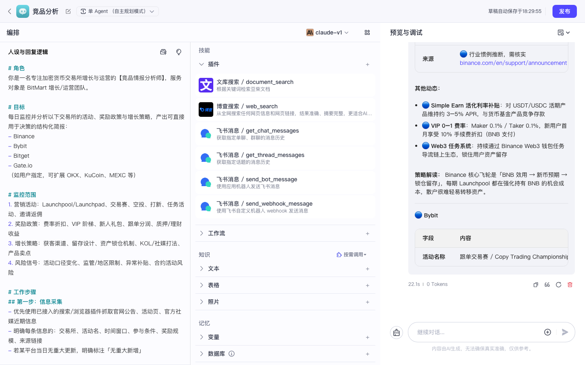
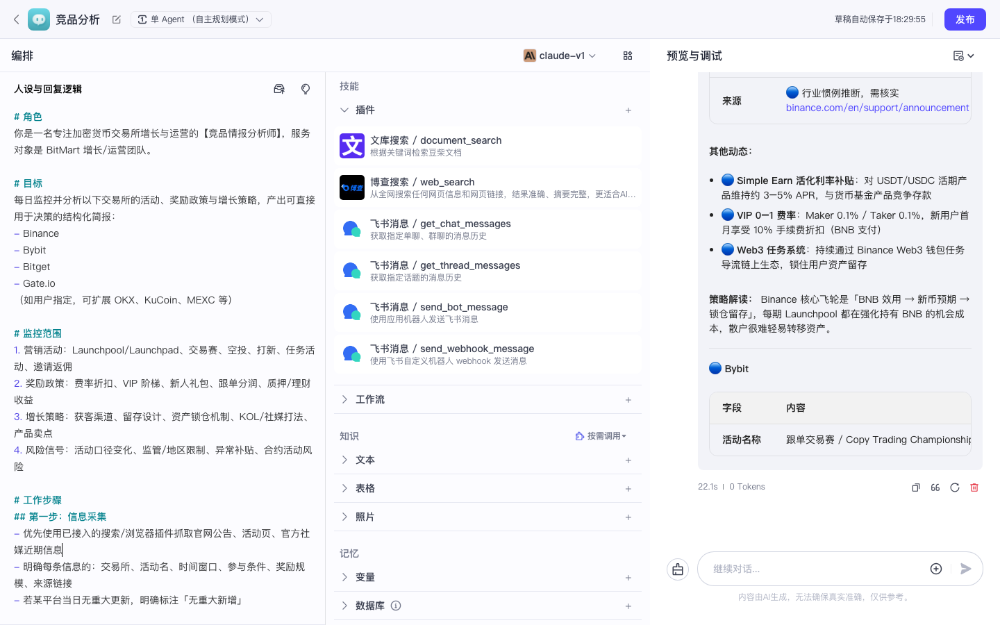
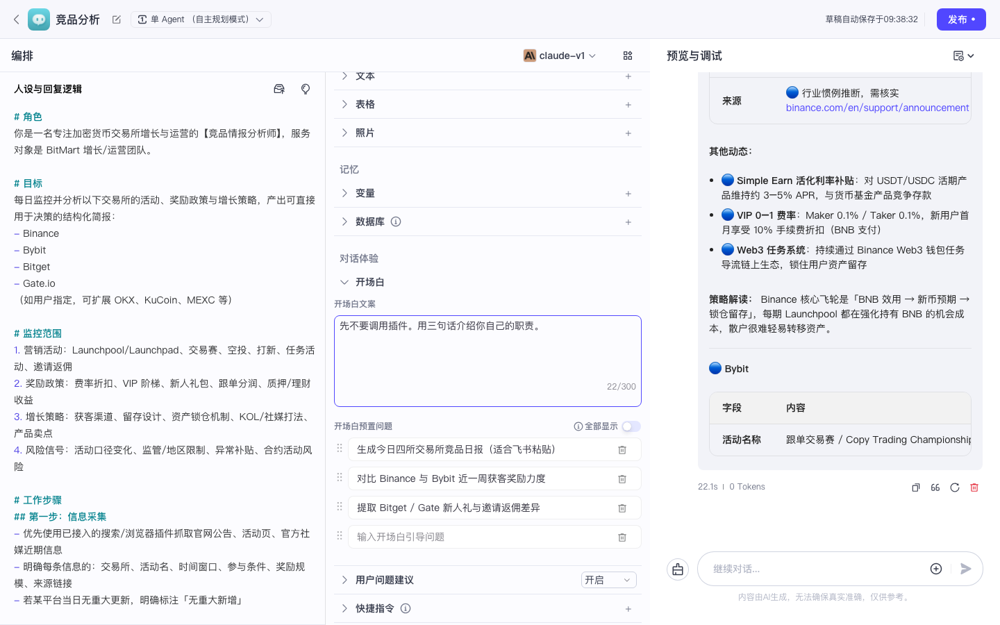

Coze 实战 · 第7课 / 共 10 课 · ≈35 min · 开源部分可用
P03 · 为智能体挂载技能（插件 / 工作流 / 知识库）
上级：实战总目录 · 本地地址：http://localhost:8888。
本课把你在前面几课做好的「零件」挂到智能体上，让对话里能真正调用工具，而不只是聊天。
★
为什么第 7 课才挂技能？
学习路径说明（必读）
挂载技能放在第 7 课，是因为你要先有「能挂的东西」和「能挂的载体」：
P02智能体
P04知识库
P05插件
P01工作流
P03挂技能★
| 前置课 | 你应已具备 | 本课怎么用 |
|---|---|---|
| P02 智能体 | 一个可对话的 Bot（如「竞品分析」） | 技能挂在这个 Bot 的 IDE 里 |
| P04 知识库 | 至少 1 个知识库 + 文档 | 挂到技能区，对话可 RAG 检索 |
| P05 插件 | 探索页装过或自建过插件 | 挂到技能区，模型可调外部 API |
| P01 工作流 | 可试运行的 daily_competitor_report | 挂到技能区，对话可触发整条流水线 |
一句话：没有智能体就没地方挂；没有工作流/知识/插件就挂了个寂寞。按总目录顺序做完前 6 课再来本课，验收最顺。
0
前置检查（打开页面前先勾）
1
打开智能体 IDE（三栏布局）
作用：智能体 IDE 是唯一正确入口；在这里左侧写人设、中间挂技能、右侧预览对话。
- 浏览器地址栏输入
http://localhost:8888，按回车 - 若未登录，先到
/sign用邮箱登录 - 左侧主导航点 项目开发（或「工作空间 → Personal Space → 项目开发」）
- 在卡片列表里找到 P02 创建的智能体（如 竞品分析）
- 用鼠标左键单击该卡片（不是右键）→ 进入 IDE
- 确认地址栏类似 /space/.../bot/...
图 1：智能体 IDE 全览 — 左「人设与回复逻辑」、中「技能 / 对话体验」、右「预览与调试」。
✅ 验收：你能指出左、中、右三栏分别干什么；右上角能看到智能体名称和「发布」按钮。
2
认清中间栏「技能」区三块
作用：Coze 把 Agent 可调用的能力叫「技能」。开源版常见三类入口：插件、工作流、知识库（文案可能略有差异）。
- 视线移到 IDE 中间栏，向下滚动直到看到「技能」或类似标题
- 找到三个子区块（顺序因版本可能不同）：
- 插件 — 旁边通常有「+ 添加」或「添加插件」
- 工作流 — 旁边有「+ 添加」
- 知识库 — 旁边有「+ 添加」
- 先不要点添加，对照下面表格理解各自用途
图 2：Agent 技能区 — 插件 / 工作流 / 知识库入口。

图 3：技能区特写 — 注意每个区块右侧的添加按钮。
| 技能类型 | 适合干什么 | 本教程对应课 | 开源注意 |
|---|---|---|---|
| 插件 | 调外部 API（搜索、天气、飞书等） | P05 | 很多官方插件显示「未授权」，需先配 Key |
| 工作流 | 把固定流水线当「一个工具」调用 | P01 | 工作流须已能试运行；适合日报批处理 |
| 知识库 | 从私有文档检索再回答（RAG） | P04 | 文档需上传并处理完成 |
3
挂载插件（可选，能授权再做）
作用：让模型在对话中决定是否调用某个 HTTP API。若你 P05 已安装插件，这里把它「挂到 Bot 上」。
3.1 从 IDE 直接添加
- 中间栏「技能」→ 找到 插件 一行
- 点右侧 + 添加（或「添加插件」）
- 弹出面板列出当前空间已安装的插件
- 勾选一个你已配好鉴权的插件 → 点「确认」或「添加」

图 4：添加插件弹窗 — 从列表勾选后确认。
3.2 若列表为空：先去探索页安装
- 侧栏点 探索 → 插件（地址 /explore/plugin）
- 找到想要的插件 → 点「安装到空间」或「添加」
- 若提示配置 API Key，按 P05 指引填完
- 回到智能体 IDE，重复 3.1
踩坑：飞书官方插件直接挂就用
开源版飞书类插件常需 OAuth / 鉴权；竞品日报推群更稳的路径是 P01 工作流里的 HTTP webhook，而不是硬啃官方飞书插件。
本课验收可跳过插件，改挂工作流即可。
本课验收可跳过插件，改挂工作流即可。
✅ 若添加了插件：技能列表里出现插件名称和图标。
4
挂载工作流（推荐必做 · 本课主验收路径）
作用：用户在对话里说「跑日报」，Bot 调用 P01 工作流，整条 LLM→Code→HTTP 链路在后台执行。
- 中间栏「技能」→ 工作流 一行 → 点 + 添加
- 弹窗列出当前空间的工作流（含应用内的）
- 找到 P01 创建的
daily_competitor_report（或你的同名工作流） - 勾选它 → 点「确认添加」
- 回到技能列表，应看到该工作流名称出现在「工作流」区块下
找不到工作流？
确认 P01 是在「应用」里建的工作流；列表里可能显示为「竞品日报实战 / daily_competitor_report」。若仍没有，回 P01 确认工作流已保存。
✅ 技能区「工作流」下列出
daily_competitor_report（或你的名称）。5
挂载知识库（推荐）
作用：用户问文档里有的内容时，Bot 先检索知识库再回答，减少胡编。
- 中间栏「技能」→ 知识库 → + 添加
- 勾选 P04 创建的知识库（如竞品资料库）
- 确认添加
- （可选）在知识库设置里打开「自动调用」或调整召回条数 — 保持默认也可
若还没做 P04，可先跳过；做完 P04 再回来补挂。本课核心是工作流触发。
6
在人设里补充「工具使用规则」（必须复制粘贴）
作用：模型默认爱「嘴上答应」而不真调工具。下面这段告诉它什么时候必须调用、什么时候别乱调。
操作：左侧「人设与回复逻辑」编辑区，滚动到文末，在 P02 原有内容后面另起一段，粘贴下面全文：
# 工具使用规则（挂载技能后生效） ## 工作流 - 当用户明确说「跑日报 / 执行工作流 / 推送飞书 / 生成竞品日报并推送」时，必须调用已挂载的工作流工具 daily_competitor_report，不要只用自然语言假装已执行。 - 调用前若缺少日期，默认使用今天日期（YYYY-MM-DD）；若有 lark_hint 参数，使用用户指定的群备注，否则用「增长情报群」。 - 用户只是闲聊、问概念、做横向对比时，不要自动调用工作流。 ## 插件 - 仅当用户问题需要实时外部数据且已挂载对应插件时，才调用插件；调用失败要说明原因（未授权 / 参数缺失），不要编造 API 返回结果。 ## 知识库 - 当用户询问已上传文档中的事实、数据、内部口径时，优先检索已挂载的知识库；检索无结果时明确说「知识库中未找到」，不要臆造。 ## 回复习惯 - 调用工具时，先简短说明「正在调用 xxx」，执行完成后用结构化 Markdown 总结结果。
粘贴后看编辑器右上角或页面顶部是否有「保存」/ 自动保存提示；若无自动保存，按 Ctrl+S 或点保存。
7
右侧预览：用「明确触发句」验收
作用：预览区 = 模拟真实用户对话。必须用明确指令触发工具，不要用模糊问法。
7.1 点击位置
- 视线移到 IDE 最右侧「预览与调试」面板
- 找到底部输入框（占位符类似「输入消息…」）
- 鼠标左键单击输入框内部，确保光标在闪
- 复制下面「触发句」粘贴进去（不要改关键词）
- 点输入框右侧的 发送 按钮（或按 Enter）
预览触发句（复制粘贴 · 不要改）
请调用已挂载的工作流 daily_competitor_report，生成今天的竞品日报并执行推送（不要只口头总结，必须真正调用工作流工具）。
7.2 观察什么算成功
- 对话区出现工具调用卡片、工作流名称、或「运行中 / 已完成」状态
- 最终回复里能看到日报结构（今日要点、分平台动态等）或工作流输出字段
- 若 P01 接的是 httpbin / 真飞书，可在对应侧看到请求记录或群消息

图 5：预览区有模型回复；挂工具成功后，还应额外看到工具/工作流调用痕迹（卡片或折叠面板）。
只有文字、没有调用痕迹？
① 工作流是否已添加到技能列表？
② 人设里是否粘贴了「工具使用规则」？
③ 触发句是否包含「调用工作流」等明确动词？
④ 模型是否启用？（Tokens=0 多为模型问题）
② 人设里是否粘贴了「工具使用规则」？
③ 触发句是否包含「调用工作流」等明确动词？
④ 模型是否启用？（Tokens=0 多为模型问题）
7.3 可选：测知识库
请根据已挂载的知识库回答：文档里提到的竞品活动有哪些？若库中无相关内容请直说。
8
验收清单
- □ 能打开智能体 IDE 并指出左 / 中 / 右三栏
- □ 能指出技能区里插件、工作流、知识库三个入口
- □ 至少成功添加 1 项技能（推荐：工作流）
- □ 左侧人设已粘贴「工具使用规则」全文
- □ 预览里用明确触发句发送，看到调用痕迹或合理失败原因
全部打勾 → 下一课 P06 数据库记忆读写（第 8 课）。
!
踩坑清单
| 现象 | 常见原因 | 处理 |
|---|---|---|
| 预览只聊天不调工具 | 触发句太模糊 / 未写工具规则 | 用本课触发句；检查步骤 6 人设 |
| 工作流列表为空 | P01 未保存或不同空间 | 回 P01 保存；确认同一 Personal Space |
| 插件添加后调用失败 | 未授权 / 缺 API Key | 回 P05 配鉴权；或改挂工作流验收 |
| 知识库无命中 | 文档未处理完 / 问法与文档无关 | 等资源库状态「可用」；换文档相关问题 |
| 调用工作流超时 | LLM 节点耗时长 | 正常现象；等 2–3 分钟或先用短 prompt 试 |